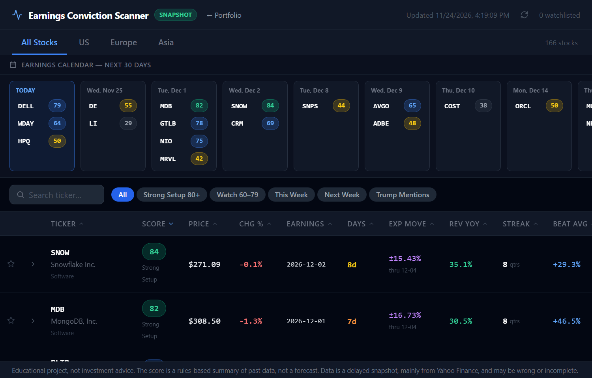

Earnings Options Scanner
One screen for earnings season: who reports next, what options are pricing, and whether the company has a habit of beating estimates.

Reads the options market
Prices the at-the-money call and put to estimate the move traders expect through the report.
Checks it against history
Measures how the stock moved after each of its recent reports, adjusting for morning and evening releases.
Covers three regions
More than 160 stocks from the US, Europe and Asia, with sector tags and filters.
Runs itself
A scheduled job gathers the data, tests the logic and publishes the site three times each weekday. If too much data is missing, the last good version stays up.
How a stock earns its score
- 40Consecutive beats
- 25Size of beats
- 20Revenue growth
- 15Upgrades
- 10Timing
Maximum points for each part. The total is capped at 100 and summarizes past data; it does not forecast returns.
New York ATM Strategy
A rule-based model for the New York open. Click through the trade.
Educational projects, not investment advice.